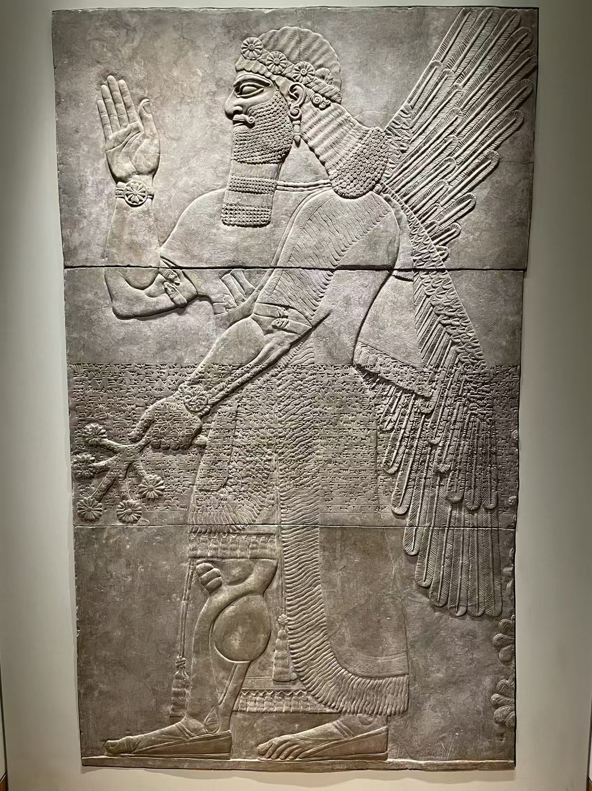

ANCIENT WEST ASIA
古代西亚
两河文明
从宫殿中的有翼守护者开始。

ANCIENT WEST ASIA / MESOPOTAMIA
尼姆鲁德的有翼守护者
从尼姆鲁德西北宫的浮雕，看鹰首与人首、手势与树纹，以及刻在人物身上的文字。
走进这一辑 →ANCIENT WEST ASIA
两河文明
从宫殿中的有翼守护者开始。

ANCIENT WEST ASIA / MESOPOTAMIA
从尼姆鲁德西北宫的浮雕，看鹰首与人首、手势与树纹，以及刻在人物身上的文字。
走进这一辑 →